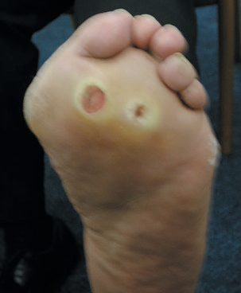
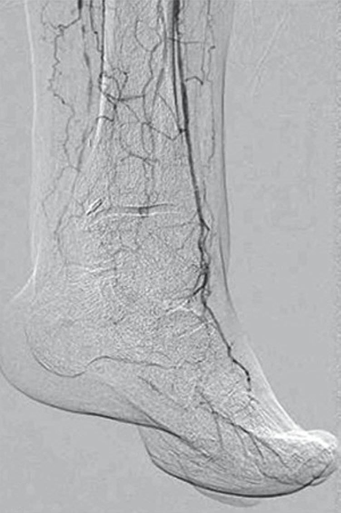
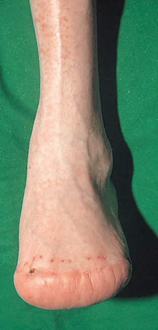
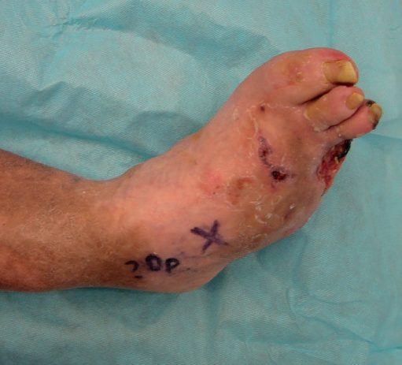

Diabetic Foot and Ischemic Limb
Summary
- Foot ulceration is the commonest endpoint of diabetic vascular complications, and diabetics are 15 times more likely to undergo major lower limb amputation than non-diabetics [1].
- Up to one-third of people with diabetes will develop a foot ulcer in their lifetime, and over half of these become infected, contributing to substantial morbidity, mortality and reduced quality of life; diabetic foot ulcers (DFUs) are an independent risk factor for premature death [2].
- The diabetic foot results from a combination of large- or small-vessel arterial occlusive disease, peripheral neuropathy, or both, requiring multidisciplinary management combining glycaemic control, wound care, infection control, and revascularisation where indicated [1].
UK practice is governed by NICE NG19, Diabetic foot problems: prevention and management (2015, updated 2019, with the risk assessment section reviewed in 2023) [3]. Its structure is organised around two named services that have no counterpart in the textbook accounts: the foot protection service, which manages people at risk, and the multidisciplinary foot care service, which manages people with an active problem.
NG19's first section is about the first 24 hours in hospital, and it places accountability on a person rather than a team: each hospital should have a care pathway for people with diabetic foot problems needing inpatient care, and a named consultant should be accountable for the overall care of the person and for ensuring that healthcare professionals provide timely care [3].
Risk should be reassessed at four defined moments, not merely annually: when diabetes is diagnosed and at least annually thereafter; if any foot problems arise; on any admission to hospital; and if there is any change in status while in hospital [3].
Definition
- Key features of the diabetic foot are ulceration, infection, sensory neuropathy, and failure to heal trivial injuries [1].
- Diabetic foot ulceration is classified by cause: 45% are purely neuropathic in origin, 10% purely ischaemic, and 45% of mixed neuro-ischaemic origin [1].
- Chronic limb-threatening ischaemia (CLTI), ischaemic rest pain and/or tissue loss (ulceration/gangrene) for more than two weeks with objective evidence of arterial insufficiency, represents the severe end of the ischaemic limb spectrum and requires urgent vascular assessment [4].
Pathophysiology
- Diabetic gangrene results from a combination of three factors: ischaemia secondary to macrovascular disease and microvascular dysfunction; peripheral sensorimotor neuropathy (PSN), leading to trophic skin changes; and immunosuppression from tissue hyperglycaemia predisposing to infection [4].
- Macrovascular disease is atherosclerotic, typically affecting the crural (tibial) vessels with relative sparing of the pedal vessels, while increased microcirculatory shunting causes microvascular dysfunction [4].
- PSN is usually sensory in a stocking distribution early on, rendering patients prone to unrecognised soft-tissue injury; it may extend to the joints, causing loss of protective reflexes and a cycle of joint injury and bony destruction (Charcot joints), while motor involvement causes flexor/extensor imbalance, altered biomechanics, and callosities from abnormal pressure loading [4].
- Ischaemia and PSN act synergistically to increase ulceration risk and reduce healing potential; superadded infection due to poor wound care can spread rapidly in subfascial planes, leading to fulminant foot sepsis, gangrene, and death [4].
- Loss of sweat and oil gland function and a blunted response to noxious stimuli from autonomic neuropathy further contribute to ulceration and infection [2].
- An acute hot, red, swollen foot may indicate Charcot neuroarthropathy, often secondary to diabetes that may be as yet undiagnosed [5].
Clinical features
- Pure neuropathic ulceration presents with a warm foot with palpable pulses, evidence of sensory loss leading to unrecognised repeated trauma, and normal or high duplex flows [1].
- Ischaemic/neuro-ischaemic ulceration presents with a cool foot, absent pulses, ulcers commonly on the toes, heel, or metatarsal head, and possible secondary infection with minimal pus and mild surrounding cellulitis; ABPI may be misleadingly high due to vessel calcification [1].
- Signs of PAD include extremity pain, pallor with dependent rubor, hair loss, shiny atrophic skin, slow capillary refill, and ulcers that usually start at the toe tips [6].
- Diabetic foot ulcers are typically located at the metatarsal heads (second MTP joint most common) or the heel, arising from neuropathy and failing to heal due to diabetic microvascular disease; they can be complicated by osteomyelitis [6].
- An unexplained swelling, heat, ulcer or deformity in a diabetic foot mandates emergency referral [5].
- Diabetic foot infection is diagnosed on clinical signs of local inflammation and systemic upset; the presence of a wound/ulcer, spreading cellulitis, fevers, or critical ischaemia indicates a more severe infection requiring urgent treatment [7].
- Inflammatory blood markers are frequently unhelpful, being normal or only mildly raised even in significant infection [7].

Etiology
- Risk factors for diabetic foot ulceration include previous ulceration, neuropathy (stocking-distribution sensory loss and Charcot joints), peripheral arterial disease (more commonly affecting below-knee calf vessels, frequently highly calcified, giving falsely elevated ABPI or incompressible vessels), altered foot shape, callus (indicating high foot pressures), visual impairment, living alone, and renal impairment [1].
- Preexisting cardiovascular and renal disease, microvascular injury, and malnutrition all predispose to diabetic foot infections, which range in severity from cellulitis to gangrene [2].
- Diabetic infections are usually polymicrobial, involving staphylococcal, streptococcal, pseudomonal, and anaerobic organisms; gas-producing Gram-negative organisms can occur in deeper, more severe infections [2].
- The aetiological agents of diabetic foot bone infection mirror non-diabetic bone infection (Staphylococcus aureus, β-haemolytic streptococci, aerobic Gram-negative bacilli) with Pseudomonas over-represented, warranting empirical coverage in severe infections, and anaerobes often present, warranting added metronidazole for abscesses/devitalised tissue [7].
- Diabetic patients with peripheral arterial disease characteristically develop long-segment occlusions of the tibial arteries with more frequent deep femoral artery involvement, though the pedal arteries are often spared even with extensive tibial disease [8].
Diagnosis
- Diagnosis of ischaemic/neuro-ischaemic ulceration relies on duplex ultrasound assessment, with angiography reserved for suspected critical ischaemia [1].
- For diabetic foot infection, plain radiographs may show osteomyelitis but can be normal, particularly early; MRI is the most sensitive imaging modality for bone involvement [7].
- Superficial swabs or cultures from ulcers/sinus tracts are unreliable for identifying the causative organism of deep-seated infection; a combination of the "probe-to-bone" test with elevated inflammatory markers and abnormal plain radiographs supports the diagnosis of osteomyelitis, and bone biopsy for culture should be considered in extensive/complex infection [7].
- Elevated CRP and ESR may support (but cannot definitively confirm or exclude) infection; deep tissue samples, not superficial swabs, should be used for culture to avoid detecting insignificant colonisation, and CT can identify deeper abscesses [2].
- Transcutaneous oxygen measurement (TCOM) can risk-stratify DFU patients; a transcutaneous oxygen tension below 40 mmHg (needed for normal wound healing) suggests the patient may benefit from hyperbaric oxygen therapy [2].
- Diagnostic work-up for a diabetic foot ulcer should include MRI of the foot to assess for osteomyelitis [6].

The foot examination is specified, and the first instruction is the one most often skipped. When examining the feet of a person with diabetes, remove their shoes, socks, bandages and dressings, and examine both feet for neuropathy (using a 10 g monofilament as part of a foot sensory examination) limb ischaemia, ulceration, callus, infection or inflammation, deformity, gangrene, and Charcot arthropathy [3]. Use the ankle brachial pressure index in line with the peripheral arterial disease guideline, but interpret results carefully in people with diabetes because calcified arteries may falsely elevate them [3], the same caution CG147 states as a prohibition: do not exclude peripheral arterial disease in people with diabetes on the basis of a normal or raised ABPI alone, and do not use pulse oximetry for the diagnosis [9].
NG19's four-band risk stratification is the examinable core of the guideline [3]:
| Band | Criteria |
|---|---|
| Low risk | No risk factors present except callus alone |
| Moderate risk | Deformity or neuropathy or peripheral arterial disease |
| High risk | Previous ulceration or previous amputation or on renal replacement therapy or neuropathy and peripheral arterial disease together or neuropathy with callus and/or deformity or peripheral arterial disease with callus and/or deformity |
| Active diabetic foot problem | Ulceration or infection or chronic limb-threatening ischaemia or gangrene or suspicion of acute Charcot arthropathy, or an unexplained hot, swollen foot with a change in colour, with or without pain |
Table reformats the NG19 risk stratification [3]. Note that callus alone leaves a person low risk, but callus combined with either neuropathy or peripheral arterial disease makes them high risk, a single-step jump that skips the moderate band entirely.
Referral and assessment timings follow directly from the band [3]:
| Band | Action |
|---|---|
| Low risk | Continue foot assessments at the annual diabetes review; emphasise foot care; advise that they could progress to moderate or high risk |
| Moderate risk | Refer to the foot protection service, to be assessed within 6 to 8 weeks |
| High risk | Refer to the foot protection service, to be assessed within 2 to 4 weeks |
Table reformats the NG19 referral timings [3].
Scoring and Severity
The six-grade Wagner classification, based on ulcer depth and degree of tissue necrosis, is among the most commonly used systems for diabetic foot ulcers, though it does not account for peripheral neuropathy or peripheral vascular disease and therefore cannot reliably distinguish infectious from ischaemic lesions [2]. The International Working Group on the Diabetic Foot (IWGDF)/Infectious Diseases Society of America (IDSA) classification grades severity: grade 1/uninfected (no local/systemic signs); grade 2/mild (at least two of local swelling, erythema 0.5–2 cm, local tenderness, warmth, or purulent discharge, with no other cause); grade 3/moderate (erythema ≥2 cm from the wound margin and/or infection extending to tendon, muscle, joint or bone, without systemic signs, osteomyelitis noted with "(O)"); and grade 4/severe (any foot infection with ≥2 systemic inflammatory response syndrome criteria: temperature >38°C or <36°C, heart rate >90/min, respiratory rate >20/min or PaCO2 <32 mmHg, white cell count >12,000/mm³ or <4 g/L or >10% immature forms) [2].
Treatment and Management
- Prophylactic management is best undertaken in a specialist multidisciplinary diabetic foot clinic, with regular foot inspection for pressure/ulceration, appropriate wide-fitting footwear, nail care with regular chiropody, debridement of pressure sites/callus, and avoidance of heat and walking barefoot [1].
- For established ischaemic ulceration, treatment includes local/systemic infection control with broad-spectrum antibiotics per local guidelines, debridement of dead tissue (including digital amputation), drainage of pus collections, plain X-ray for osteomyelitis, and consideration of revascularisation (angioplasty or femoro-distal bypass) before considering amputation for failed medical/surgical treatment; limited distal amputations (e.g., transmetatarsal) are often possible [1].
- Management of diabetic surgical patients requires close monitoring of hydration, blood pressure and renal function; metformin should be stopped 48 hours before angiography to avoid lactic acidosis, and insulin-dependent diabetics who are starved require a sliding scale [1].
- Treatment of diabetic foot infections includes maintaining euglycaemia, a moist wound environment, systemic antibiotics for cellulitis/osteomyelitis, debriding necrotic tissue, and offloading with orthotic devices; callus debridement lowers peak plantar pressure and reduces ulcer risk [2].
- Antibiotics targeting aerobic Gram-positive organisms are continued 1–2 weeks (extended if infection persists); because blood flow is often compromised, longer courses are often required, and osteomyelitis typically requires 6 weeks of antibiotics if bone resection/amputation is not performed [2].
- Early debridement is associated with lower rates of major lower extremity amputation and improved wound healing [2].
- In superficial osteitis from loss of soft-tissue cover with vascular compromise, optimising glycaemic control, improving vascular supply, and pressure relief with appropriate footwear may be more important than biopsy/antibiotics and may avoid amputation [7].
- Full vascular assessment is mandatory in patients with poor peripheral pulses; proximal angioplasty or bypass surgery may improve distal vascularity enough to allow successful infection surgery in the foot [7].
- Amputation is indicated for gangrene, large non-healing ulcers, or unrelenting rest pain not amenable to revascularisation; heel ulceration to bone requires amputation [6].
- Amputation causes for the limb (as opposed to life-saving indications) are categorised as "dangerous" (spreading gangrene, necrotising fasciitis, gas gangrene, extensive tissue necrosis, uncontrolled diabetic foot sepsis with systemic infection, primary malignant tumours), "dead" (CLTI with unreconstructable disease, extensive tissue necrosis), or "damn nuisance" (neuropathy/deformity with severely impaired gait) [1].
Four presentations demand immediate referral to acute services, and NG19 names them. Refer immediately, informing the multidisciplinary foot care service, if there is ulceration with fever or any signs of sepsis; ulceration with limb ischaemia; clinical concern that there is a deep-seated soft tissue or bone infection, with or without ulceration; or gangrene, with or without ulceration [3]. For all other active diabetic foot problems, refer within 1 working day to the multidisciplinary foot care service or foot protection service, for triage within 1 further working day [3].
- On infection, the sampling instruction is specific and the negative-test warning is the important one. If a diabetic foot infection is suspected and a wound is present, send a soft tissue or bone sample from the base of the debrided wound for microbiological examination; if that cannot be obtained, take a deep swab [3]. Start antibiotic treatment as soon as possible, taking samples before or as close as possible to the start [3].
- Think about osteomyelitis if there is a local infection, a deep foot wound or a chronic foot wound [3], and be aware that osteomyelitis may be present despite normal inflammatory markers, X-rays or probe-to-bone testing [3].
- Where osteomyelitis is suspected but not confirmed on initial X-ray, consider MRI to confirm the diagnosis [3].
- Charcot arthropathy has its own pathway, and the diagnostic threshold is deliberately low. Suspect acute Charcot arthropathy if there is redness, warmth, swelling or deformity (in particular when the skin is intact) especially with peripheral neuropathy or renal failure, and think about it even when deformity is not present or pain is not reported [3].
- Be aware that a foot or ankle fracture in a person with diabetes may progress to Charcot arthropathy [3].
- To confirm the diagnosis, refer within 1 working day to the multidisciplinary foot care service for triage within 1 further working day, and offer non-weight-bearing treatment until definitive treatment can be started [3].
- Arrange a weight-bearing X-ray of the affected foot and ankle, and consider MRI if the X-ray is normal but Charcot is still suspected [3].
- Treatment is a non-removable offloading device, with a removable device considered only if a non-removable one is not advisable [3].
Surgeries
- Amputation level is chosen at the lowest level with tissue viable for healing, including as many working major joints as possible for function, and ideally sited between large joints for prosthesis fitting [1].
- Above-knee amputation (AKA, transected at the junction of the upper two-thirds and lower third of the femur, 12–15 cm above the knee) is common in end-stage vascular disease; most heal, but only young, fit patients achieve prosthetic walking [1].
- Below-knee amputation (BKA, tibia transected 8–10 cm distal to the tibial tuberosity, fibula 2 cm more proximal) is weight-bearing on the patellar tendon with good prosthetic fit if knee function is good; about two-thirds heal and more patients achieve walking than after AKA [1].
- The skew flap technique produces a better stump for prosthetic fitting than the bulkier posterior flap, which delays mobilisation [1].
- BKA outcomes: 80% heal, 70% walk again, 5% mortality; AKA outcomes: 90% heal, 30% walk again, 10% mortality [6].
- Through-knee amputation gives better functional results than AKA but produces a wide stump difficult for prosthesis fitting; Gritti-Stokes (supracondylar AKA) is increasingly popular for bilateral amputees, creating a long stump, especially suited to wheelchair-dependent patients [1].
- Symes (ankle disarticulation) has few indications in vascular patients and is best avoided outside trauma, as a good BKA gives better walking function [1].
- Transmetatarsal amputation is useful in diabetics or when several toes are gangrenous; ray amputation is used when digital gangrene extends to the forefoot, particularly useful in diabetics when infection tracks along a tendon sheath; digital amputation is usually reserved for diabetic disease or local trauma [1].
- Preoperative care includes correcting Hb and fluid/electrolyte balance, ensuring good diabetes control, cross-matching blood, adequate analgesia (epidural may reduce phantom pain), ECG/CXR, optimising cardiac function, prophylactic antibiotics, and counselling [1].
- In extensive peripheral neuropathy, a below-knee amputation sited in an area of better sensation may be more appropriate for diabetic foot infection than more distal excision [7].
- Excision for diabetic foot infection should be adequate to remove all infected material, with excess bone resected to allow tension-free skin closure [7].
- Urgent surgical debridement is required for severe/necrotising foot infections, deep abscess, compartment syndrome, or limb ischaemia, resecting all diseased soft tissue, muscle and bone back to healthy margins [2].

Complications
- Amputation for arterial disease carries significant mortality and major morbidity [1].
- Postoperative complications of amputation include infection and non-healing of the stump [1].
- Overall mortality after major leg amputation is 50% within 3 years [6].
- Even among diabetic foot infections that heal, nearly 50% recur within a year and over 90% recur within 10 years; up to 15% of DFUs progress to osteomyelitis, a significant proportion of which ultimately require lower extremity amputation [2].
- Once a major amputation is performed, 5-year survival declines from 70% to 43%, likely reflecting worsening cardiovascular and renal disease exacerbated by impaired mobility [2].
- Dry (non-infective) gangrene may be allowed to auto-amputate if small or confined to the toes, whereas large lesions should be amputated; wet (infective) gangrene requires removal of infected necrotic material, moist wound care, non-weight bearing, and antibiotics, and can be a surgical emergency requiring emergency amputation if extensive infection or systemic sepsis develops [6].
- Reperfusion after revascularisation can cause compartment syndrome, lactic acidosis, hyperkalaemia and myoglobinuria/rhabdomyolysis [6].

Prognosis
- Diabetic foot ulcers are an independent risk factor for premature death [2].
- Diabetics are 15 times more likely than non-diabetics to require major lower limb amputation [1].
- About one-third of people with diabetes will develop a foot ulcer during their lifetime, and over half of these become infected [2].
- Five-year survival falls from 70% to 43% after a major amputation [2].
- Overall mortality after major leg amputation is 50% within 3 years [6].
- Patients with diabetes and PAD have a four-times-higher risk of major limb amputation, and elevated fasting glucose is the primary attributable risk factor for PAD-related mortality, surpassing smoking and hypertension in the general population [8].
References
- Oxford Handbook of Clinical Surgery, 5th ed., Ch. 19 Peripheral vascular disease, The diabetic foot
- Sabiston Textbook of Surgery, 22nd ed., Ch. 35 Primary Soft Tissue Infections, Diabetic Foot Infections
- NICE Guideline NG19: Diabetic foot problems — prevention and management (2015, last updated October 2019), 1.1.1; 1.1.2; 1.3.3; 1.3.4; 1.3.5; 1.3.6; 1.3.7; 1.3.8; 1.3.9; 1.4.1; 1.4.2; 1.6.1; 1.6.3; 1.6.4; 1.6.5; 1.6.6; 1.7.1; 1.7.2; 1.7.3; 1.7.4; 1.7.5; Recommendations www.nice.org.uk
- Bailey & Love's Short Practice of Surgery, 28th ed., Ch. 61 Arterial disorders
- Bailey & Love's Short Practice of Surgery, 28th ed., Ch. 41 Foot and ankle
- The ABSITE Review, 2022, Peripheral Arterial Disease
- Bailey & Love's Short Practice of Surgery, 28th ed., Ch. 43 Bone and joint infection
- Sabiston Textbook of Surgery, 22nd ed., Ch. 103 Peripheral Occlusive Disease
- NICE Clinical Guideline CG147: Peripheral arterial disease — diagnosis and management (2012, last updated December 2020), 1.3.4; 1.3.5 www.nice.org.uk